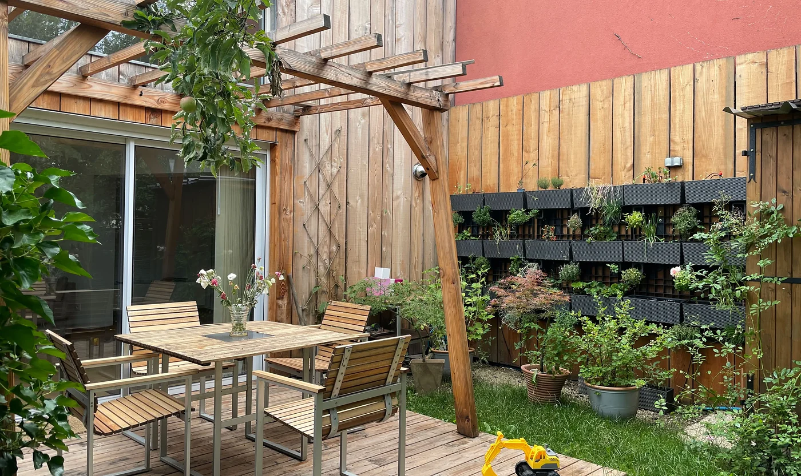
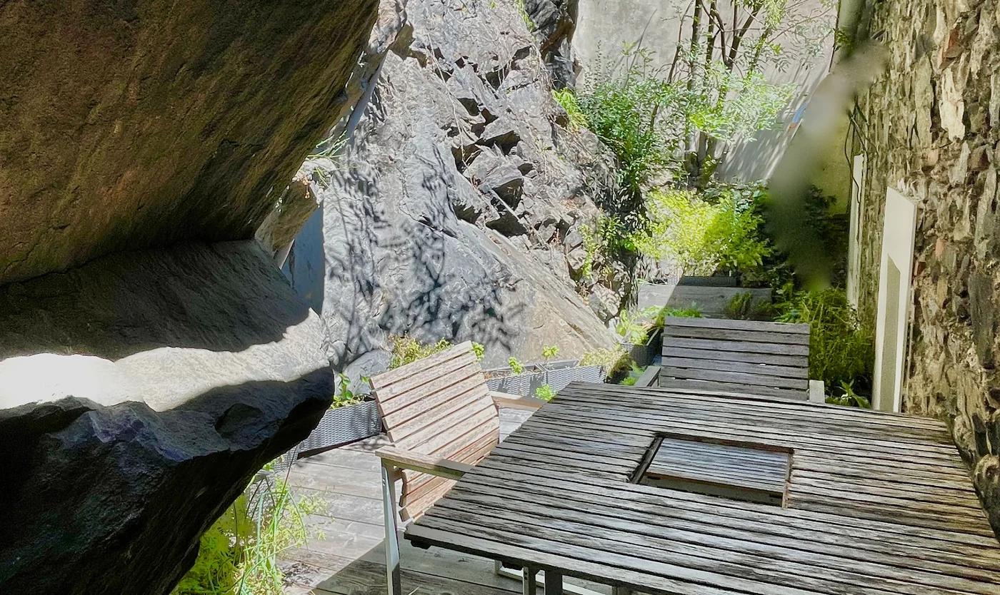

architecture4future
Des bâtiments vivants, pensés avec le végétal.
Agence d’architecture à Vienne. Habitat, réhabilitation de friches, bureaux et urbanisme : des espaces agiles, citoyens, sobres et végétaux.
Voir les réalisationsNous contacter

